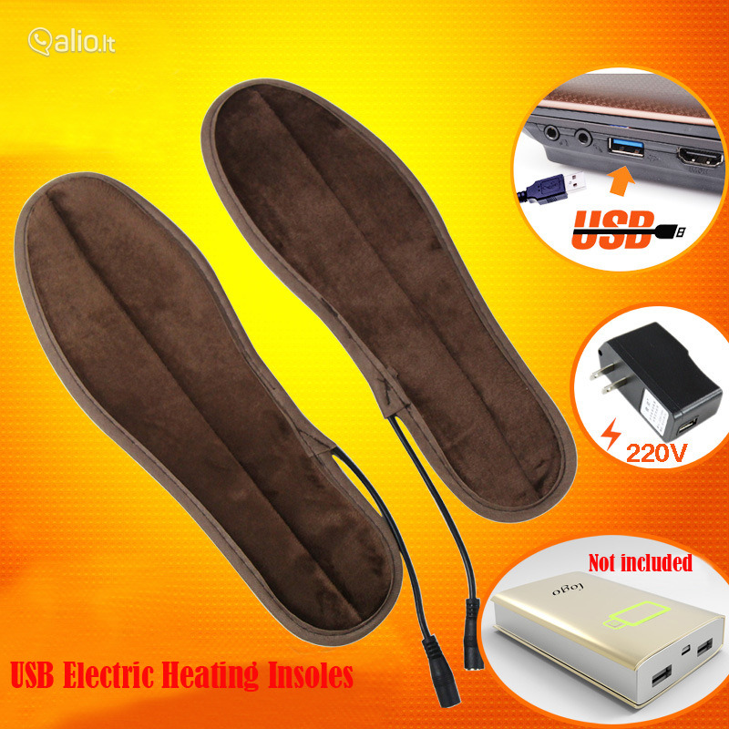

Elektroninės Cigaretės – Eektroninės Cigaretės ir E-Skysčiai – GerasDūmas.lt
 Prisijungti / Registruotis Pageidavimų sąrašas Meniu eParduotuvės KONTAKTAI +370 6076 5203 +370 6076 5203 gerasdumas@mail.com 0 € 0.00 PAGRINDINIS Higiena PREKIŲ KATALOGAS Elektroninės Cigaretės Vienkartinės eCigaretės Cigarečių traukimo tipo Pažengusiems Modai Integruotos baterijos modai Neintegruotos baterijos modai Kaitikliai Cigarečių traukimo tipo kaitikliai Standartiniai kaitikliai Perrenkami RTA RDA RDTA Kaitinimo elementai VooPoo SmokTech Joyetech Eleaf Aspire Innokin GeekVape Vaporesso Artery KangerTech Uwell Baterijos ir įkrovikliai Baterijos Įkrovikliai Vaipo Priedai Kandikliai Stikliukai Spiralės/Vata Buteliukai Aromatizuoti PREMIUMIAI Premium e-Mixai Aloha City 40ml IŠPARDAVIMAS Premium Easy Squeeze 50ml IŠPARDAVIMAS Celebrity 50ml IŠPARDAVIMAS Premium GerasDumas FROZEN 50ml Premium Natura 100ml SweTTTooTH 50ml FunnyMonkey 50ml Premium 10ml Vip 10ml Druskiniai NicSalt Bazės Aromatai Premium Aromatai 100ml One Hit Wonder 30ml Premium Aromatai Blast 15ml Swag 30ml SunShine Paradise 30ml VampireVape 30ml T-Juice 10/30ml Nikotinas NAUJOS PREKĖS SPECIALŪS PASIŪLYMAI INFORMACIJA Taisyklės Garantijos Metantiem rukyti KONTAKTAI Eektroninės Cigaretės ir E-Skysčiai - GerasDūmas.lt Produktai Elektroninės CigaretėsElektroninės Cigaretės
Elektroninių cigarečių rinkiniai . Visoms eCigatėms taikoma kokybės garantija 3 mėnesiai (90 kalendorinių dienų) o Pradiniams rinkiniams 1mėn(31d.) nuo prekių įsigijimo dienos. Skirtingų produktų (modelių bei gamintojų garantino aptarnavimo terminas gali skirtis.
Cigarečių traukimo tipo
Pažengusiems
Mėnesio prekė
Bazės 50/50 1Litras A+ Klasės IŠPARDAVIMAS